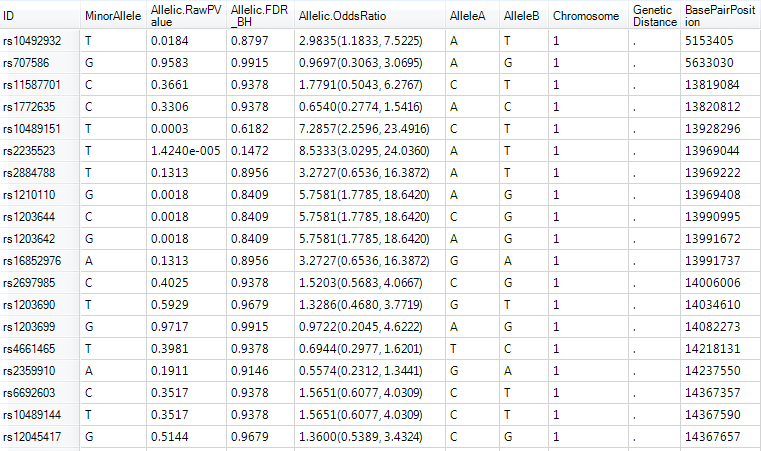
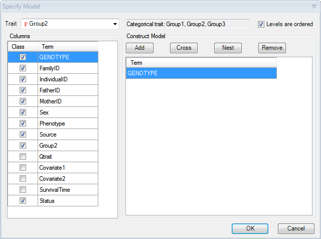
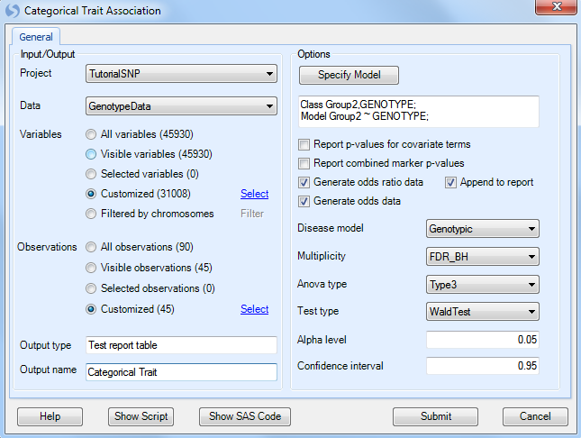
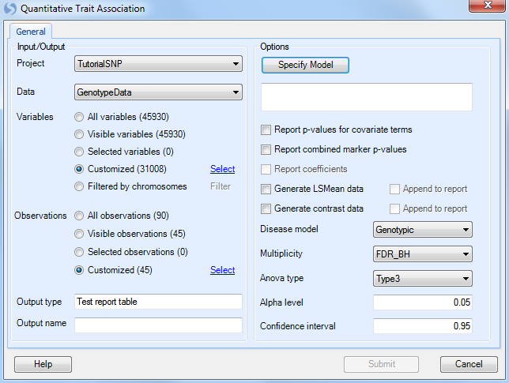
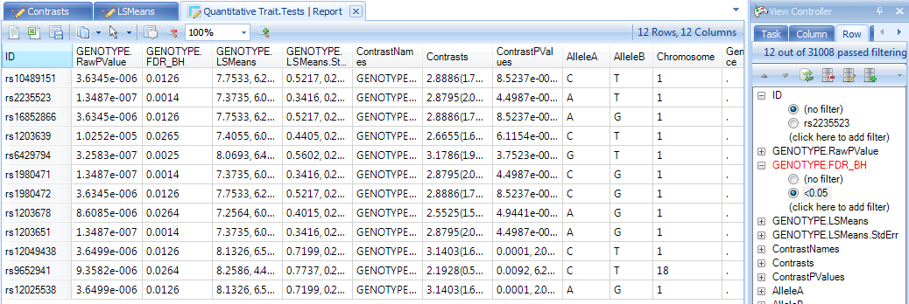
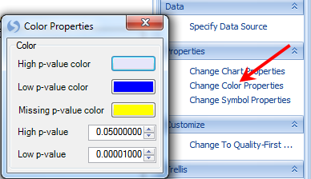
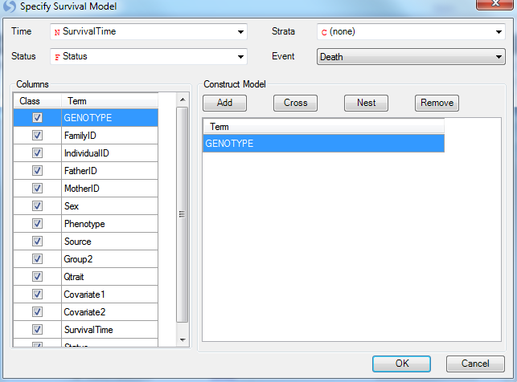
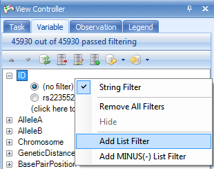

Association Analysis¶
Besides visualization, summarization, and QC data, Array Studio contains a powerful set of tools for SNP association analysis. Users can analyze data using Single-Marker Association tests or Two-Marker Association tests. Available tests include Basic Association, Stratified Association (single marker only), Quantitative Trait, Categorical Trait, Survival Trait, Repeated Measure Trait, as well as Dose Data and Probability Data Association tests (also CNV analysis modules are available).
In this tutorial, we will cover basic association, categorical trait, quantitative trait, and survival trait analysis.
Basic Association Single Marker¶
Single marker-basic association analysis is based on Fisher s Exact test to test the allele frequency difference between Case/Control traits. To start a single marker-basic association analysis, go to Genotyping Menu | Single Marker Association | Basic Association to open the Basic Association window.

As usual, ensure that the Project is Tutorial and Data is GenotypeData and the Variables are set to customized variables using the list GenotypeData.Variable31008. For all of our association analyses, we only have design information for the JPT group, so use the Observation list GenotypeData.Observation45 that was created in the last chapter during the Filter step (use customized observation list).

Under Options,
-
We need to set the design column containing the Trait we wish to analyze, in this case Phenotype (Note: By default, Array Studio should have chosen this as the Trait, due to the selection of Group as the Phenotype column when importing the Design Table).
-
Next, we need to set the Case level. As the levels of Group are named case and control, we should choose Case as our Case level.
User can use following options to decide which statistics to include in the result:
-
Generate the Minor allele (make sure it s checked)
-
Minor allele count
-
Allelic test p-value and odds ratio (make sure it s checked)
-
Genotypic test p-value (uncheck this box)
-
Dominant test p-value
-
Recessive test p-value
-
Additive test p-value
Note
While it is possible to run this analysis and test for a genotypic p-value, dominant test p-value, recessive test p-value, additive test p-value, and use Fisher Exact test instead of Chi-square test, for the purposes of this tutorial we will only investigate the allelic test Chi-square p-value and asymptotic odds ratio (Fisher Exact test will give exact odds ratio).
We can set the Multiplicity adjustment for the test (leave as is with FDR_BH, an Alpha level of 0.05, and a Confidence interval of 0.95).
Finally, change the Output name to Basic Association and click Submit to run the basic association test.
A new Table will be created in the Solution Explorer under the Inference section. All association analyses in Array Studio will generate Inference Reports. Notice the name of the report, Basic Association.Tests (as this is the name we specified above), and the type the report InferenceReport Data.

A TableView called Report will be generated by default and immediately visible in the main view window (make sure filters are cleared to see all variables). All of the requested information is now available for each marker, including the MinorAllele, Allelic.RawPvalue, Allelic.AdjustedPValue, and Allelic.OddsRatio. The Odds Ratio also includes the confidence interval. The last 5 columns are the appended annotation table.

Right click in the header of the Allelic.RawPvalue column and select Sort Ascending.

The TableView is sorted, showing the most significant markers based on this analysis.
We can also choose to filter this view, and we can do so using any of the generated columns (p-value, adjusted p-value etc.) or any of the annotation columns. As we are going to run three more similar analyses (categorical, quantitative and survival traits), we will do some filtering by p-value in later chapters.
Categorical Trait Single Marker¶
To run a single marker-categorical trait analysis, go to the Genotyping Menu | Single Marker Analysis | Categorical Trait.

As always, ensure that Tutorial is chosen for Project, GenotypeData is chosen for Data, GenotypeData.Variable31008 is chosen for Customized Variables. As we only have categorical trait information on the JPT subjects, make sure that our subject list, GenotypeData.Observation45, is chosen for Customized Observations.

Click the Specify Model button to open the Specify Model window:

Set the Trait to Group2. Notice that the type of trait is now recognized as a Categorical Trait, and lists the three categories. Note: for categorical traits, the user can specify whether the data is ordered. If it is ordered, it should be analyzed differently (using cumulative odds logistic regression instead of generalized logistic regression), and the Levels are ordered checkbox should be checked when running the model for this dataset. Check the Levels are ordered checkbox now (Array Studio has the ability to deal with nominal traits or ordinal traits).
Additional covariates could be added to the model at this point, including potential principal component analysis components. However, for this tutorial, leave the model as is (Categorical Trait is Group2, ordered, model only includes Genotype).
Click OK to return to the Categorical Trait window.
At this point, the updated model should be reflected in the window.

Ensure that Generate odds ratio data and Generate odds data is selected. Ensure that Genotypic is chosen for the Disease model. Other available diseases models include Additive, Dominant, and Recessive.
Multiplicity should be set to FDR_BH, with an Alpha level of 0.05 and a Confidence interval of 0.95.
Set the Anova type to Type3, and set the Test type to WaldTest (the other option is LikelihoodRatio test).
Finally, set Output name to Categorical Trait.
If the user is interested, the equivalent SAS code can be generated after all options are set, by clicking the Show SAS code button.
Click Submit to run the Categorical Trait association analysis.
Three new Tables will be generated under the Inference section of the Solution Explorer: the standard Tests table, as well as the requested Odds and OddsRatio Tables.

Double click on the Categorical Trait.Tests Report to display the TableView in the main view window. If this data is filtered, reset all filters to see all variables.

Notice that the Categorical Trait.OddsRatio table contains two views: an OddsRatio view and a Table view. Switch to the OddsRatio view now by double-clicking it.
The OddsRatio table will only be generated for significant genotypes. Remove any filters on this view, and notice that there are 3 charts that were generated. To view all 3 charts in the same time, change to 2*2 in the drop down list.

The user can also see the TableView information for the OddsRatio by double-clicking the generated table view.
In this TableView, each row contains the marker ID, the group that is being compared, and the p-value, as well as the odds ratio and confidence intervals. Annotation information is also included.

Finally, a Table has been created for viewing the Odds. This includes a visualization of the Odds, as well as a TableView. Double-click on the Odds view now to open it in the main view window.

Double-click on the TableView of Odds now to see the generated Odds for each group.

Quantitative Trait Single Marker(General)¶
To run a single marker-quantitative trait, go to Genotyping | Single Marker Analysis | Quantitative Trait (General), which opens the Quantitative Trait window.

As always, ensure that Tutorial is chosen for Project, GenotypeData is chosen for Data, and GenotypeData.Variable31008 is chosen for Customized Variables. As we only have categorical trait information on the JPT subjects, make sure that our subject list, GenotypeData.Observation45, is chosen for*Customized Observations.*

Click the Specify Model button to open the Specify Model window:

The first step in this window is to select the quantitative trait to be used for analysis. For Trait, choose the column Qtrait, as this contains our quantitative trait information. If the correct column is selected, the box to the right will indicate that the type of trait is indeed a quantitative trait.
Next, we can add any covariates to our model. Normally, this may include generated components from a principal component analysis.
For this tutorial, we will just add the columns labeled Covariate 1 and Covariate 2. They can be added by selecting both of these columns (under Columns), and clicking the Add button to add them to the model. Notice that Qtrait, Covariate 1 and Covariate 2 are set to Class, uncheck the box for them.
Click OK to return to the Quantitative Trait window. At this point, the updated model should be reflected in the window.

Under Options, ensure that Generate LSMeans data is selected, as well as Generate contrast data, and that Genotypic is chosen for the Disease model. Other available diseases models include Additive, Dominant, and Recessive.
Multiplicity should be set to FDR_BH, with an Alpha level of 0.05 and a Confidence interval of 0.95.
Set the Anova type to Type3, and set the Test type to WaldTest (the other option is LikelihoodRatio test).
Finally, set Output name to Categorical Trait.
Click Submit to run the Quantitative Trait association analysis.
Three new Tables will be generated under the Inference tab of the Solution Explorer: an LSMeans (least square mean) Table, a Contrasts Table and a Tests table. The Tests table is similar to the Table encountered with the Basic Association analysis and with the categorical association analysis.

Ensure that the Report TableView for Quantitative Trait.Tests is showing in the main view window. Reset any filters if need.
Next, let s filter the table, to only show us markers where the GENOTYPE.FDR_BH (adjusted p-value) is less than 0.05 (enter "<0.05" into the GENOTYPE.FDR_BH filter).

This should show a TableView containing 12 rows. Let s further sort these rows by the adjusted p-value column, so that the most significant markers are shown first, as shown below.

Select the top three markers now, by clicking on the header row names in the ID column.

Now, let s generate a ChromosomeView for this data. To add a ChromosomeView, right click Quantitative Trait.Tests, click on Add View and then choose ChromosomeView. When added, it should look similar to the following screenshot.
Only two chromosomes are shown, because the data was previously filtered. We will un-filter this data in one minute, but first, let s check to see whether the three selected markers (with the same p-values) are in linkage disequilibrium.

To generate Linkage Disequilibrium results on demand, click the LD On Demand button in the Task tab of the View Controller.

This generates a correlation heatmap of our selected rows, with a red color indicating higher correlation. The coloring scheme can be changed by clicking the Customize View window in this window

If the Correlation Heatmap does not look similar to the screen shot above, click the Customize View button and remove any Variable filters.
It is clear from the perfect correlation values (=1), that these three markers are in complete linkage disequilibrium.
Close the window and return to the ChromosomeView.
Now, remove the previously set p-value filter. Your ChromosomeView should now look similar to below. In this view, you can see all of the Chromosomes in your experiment, and then each chromosome has lines colored, based on a certain criteria.

Click the Specify Data Source option in the Task tab of the View Controller. Note that the Genotype.RawPValue option is chosen. This means that the color is based on this column. Click OK to return to the view.

Now click the Change Color Properties option in the Task tab of the View Controller. This dialog box shows you how the chart is colored. In this case, high p-values are colored as a clear color, while low p-values are colored as blue. The user can also specify what counts as a high and low p-value.
Feel free to change the colors, and/or the high and low p-values, and reflect the changes on the chart.

The user also has the option of looking at each individual chromosome in its own chart. This can be accomplished by clicking the Trellis by Chromosome option in the Task tab of the View Controller. Click this option now and the view should reflect the screenshot below.

Scroll through the charts, to see all of the chromosomes. Notice that the Y-axis of the chart represents the log10 (p-value). This is a fully interactive view as well, so individual data points can be selected and viewed in the Details Window. When selected, points turn a red color.
Array Studio also generated LSMeans table and charts for the quantitative data.
Switch to the LSMeans view for the Table Quantitative Trait.LSMeans. By default, LSMeans data was generated for each significant marker (as we noted earlier, there are 12 significant markers, with an adjusted p-value<0.05). Scroll through the charts and take a look at the data (unfilter the data if necessary). It is clear that for each significant marker, the different genotypes have different least square mean values for the quantitative trait.

A Table view of the LSMeans data was also generated and can be opened and viewed at any time.
Finally, a Contrasts Table was generated, with a Contrasts view, as well as a Table view. Double-click the Contrasts view now.

On the X-axis is each contrast (i.e. A_T vs. A_A, T_T vs. A_A), with the Y-axis the value of the estimate.

A Table view was created for the Contrasts dataset. This can be opened and viewed at any time.
Survival Trait Single Marker¶
Survival Trait analysis could be an important component of any SNP study from clinical trials. As we noted earlier, it is possible to generate a SurvivalView in Array Studio. However, we can also perform single-marker and two-marker survival trait association analysis.
Single-Marker Survival Trait analysis will be demonstrated in this tutorial. To perform this analysis, go to the menu Genotyping | Single Marker Association | Survival Trait.


As always, ensure that Tutorial is chosen for Project, GenotypeData is chosen for Data, GenotypeData.Variable31008 is chosen for Customized Variables. As we only have categorical trait information on the JPT subjects, make sure that our subject list, GenotypeData.Observation45, is chosen for Customized Observations.
Click the Specify Model button to open the Specify Model window:

For Survival Analysis, the user needs to have design columns containing at least three pieces of information. First, the Time column must be set (in this case, use the SurvivalTime column). Second, the Status column must be set (in this case, use the column Status). Finally, the Event must be set (using Death from the Status column).
Strata and other covariate factors can also be added to the model at this stage as well. However, for this tutorial, just leave Genotype in the model.
Click OK to return to the Quantitative Trait window. At this point, the updated model should be reflected in the window.

Under Options, ensure that the Generate hazard ratio data is selected, and that Genotypic is chosen for the Disease model. Other available diseases models include Additive, Dominant, and Recessive.
Multiplicity should be set to FDR_BH, with an Alpha level of 0.05 and a Confidence interval of 0.95.
Set the Anova type to Type3, and set the Test type to WaldTest (the other option is LikelihoodRatio test).
Finally, set Output name to Survival Trait.
Click Submit to run the Quantitative Trait association analysis.
Two tables will be generated in the Inference section of the Solution Explorer, Survival Trait.HazrdRatios and Survival Trait.Tests data.


Finally, notice in the Lists section of the Solution Explorer, that each of our analyses has generated lists of significant genes, based on our criteria of an FDR-BH adjusted p-value of 0.05.

Let s use our survival analysis List with the previously generated SurvivalView in the GenotypeData dataset to see what these markers look like.
First, reopen the SurvivalView of the GenotypeData dataset by double-clicking it in the Solution Explorer.

Next, once the SurvivalView is opened, go to the Variables filter in the View Controller.
Select the ID column of the filter, and expand it.
Note
If the main view window shows an error message, stating that there is missing or negative information in Y, you will need to re-filter the Observations to ONLY include the JPT subjects as the remaining subjects do not include survival time information, and this filter had been previously removed.

To add a filter based on a list, right click on ID and choose Add List Filter. Select the Survival Trait.Association.Sig6 which contains the six significant markers in the survival trait analysis, and then click OK.

The main view window is updated to only show the 6 charts from the significant markers.

Congratulations! You have completed four different association analyses in Array Studio. Save your project file, in case you want to go back to it in the future. In the next chapter, we will look at further visualizations that can be used on the analysis results.